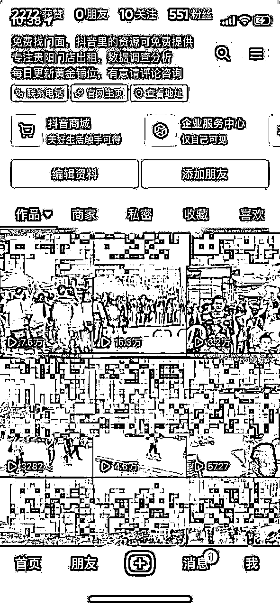
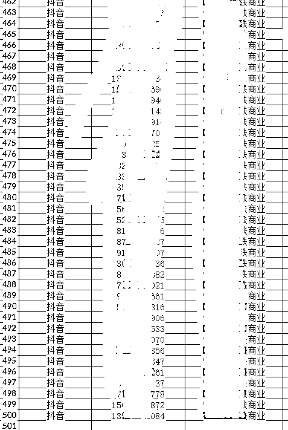

来源：https://r4d3nnajkk.feishu.cn/docx/OBjId2g9Goz997xr9dccrL4Annf
各位朋友好，我叫井九，目前在操作同城商业转店招商号，作为一个蹲了好几年的小透明，准备做分享一个目前算是比较蓝海的项目，我们通过这个项目半个月时间内成功变现了十五万，其实不止这个数，免得人说标题党，当人我们目前的线索后期还会有转化，关键是我们从起号到成交，只投入了500元。关于这个项目，我会从项目介绍、资源对接、起号、变现来讲。

首先我们说一下什么是同城转店招商号，目前做同城转店账号的人还不多，我们查了一下数据现在一个城市多的只有七八个账号，少的只有一两个账号，而且没有所谓的十几万的头部账号出现，相对于其他领域而言，这是属于蓝海领域。对实体有一定了解的都知道，目前店铺转让主要以在店铺门口贴广告或者丢给中介的模式，还有的会挂同城网站上。但效果不是那么理想，店铺转让不出去，只有把押金和装修都白白丢给了房东。所以这个时候，解决店铺老板转让痛点的同城商铺转让就有机会了。目前来看前景是非常不错的。我们获取的精准客户数据如下：
其次是资源对接，很多人在起这种账号的时候无从下手。原因无非是没有资源，这里所谓的资源就是各种正在转让的店铺，其实这里有两种获取店铺转让资源的方法，第一种是去同城网站上找，找到转让商铺的店主，和他说明来意，自己可以帮他转店，去看到店铺之后直接拍成视频。前一天晚上合一整理联系，第二天一天一两个小时可以看五六家店铺，这就有了素材。第二呢是和中介合作，路边很多中介都有这样的服务。和他们合作获得店铺信息。有了这些资源我们发布的素材就不会缺。获取的精准线索如下：

第三是起号运营，这种同城转店账号是最好起的，一般五六条视频就能够起号成功，而且这五六条视频还会带来客户。这里我分为两步讲，第一呢是视频制作，我们找到一个对标账号对他的视频进行模仿，这种账号大多数没有文案也没有配音，只是简单标题加热门的BGM即可。视频长度控制在12秒以内，保证视频的完播率。第二呢是投放，想要快速获得客户并完成起号，投放是必不可少的。投放方式也简单，投放同城定位方圆10公里，兴趣标签选择个体创业，正常情况下，两三百元就可以完成起号。这里要注意的人，找店铺的人最关心的是位置和人流，所以我们视频内容最好是在人流多的时候拍视，还可以说明大致位置，和周边业态。视频素材和起号成功率有很大的关系。
最后就是变现，这类同城店铺转让账号变现能力非常强，主要有几种变现方式。
第一种变现方式是广告变现，在我们起号成功之后。想要转让店铺的人会让你发布，一般发布一条转让信息价格200-500元左右，这种方式有人找过我们，没有合作。
第二种呢是佣金，转店账号获得客户之后如果客户签约成功，一般会给十天或者半个月的租金，如果店铺租金是4500元，签约成功一单我们获得的佣金一般是一个月的佣金页就是4500元左右，正常一个店铺信息发布出去1-2天之内就能成交。这种方式目前我们做了十几单，效果还算不错，变现能力也比较强。
第三种呢是招商，招商是很多商业管理公司比较头疼的问题，而我们发布他们的商铺进行招商，客户签约之后获得佣金也是非常可观的。目前我们和商业公司合作，这里合作也比较简单，找到即将开业的或者去政府的公式网站，找到政府的商业地产看谁中标，然后上门谈合作即可，大多数都愿意的，我们一个星期之类招满了60个铺位的商小吃街道和80多个铺位的超市综合体，这里变现主要有两种，第一个是佣金，佣金一般1-2两个月，还有招商管理费，这个费用没有固定，看自己怎么谈。这一步因为我只签约后甲方付了管理费，和前期预付了十几万的佣金，后面的还未结算，这里就不说了，免费各位大佬说我标题党。
还有其他的变现方式，这些变相方式对于圈内大佬来说，太简单不过了。